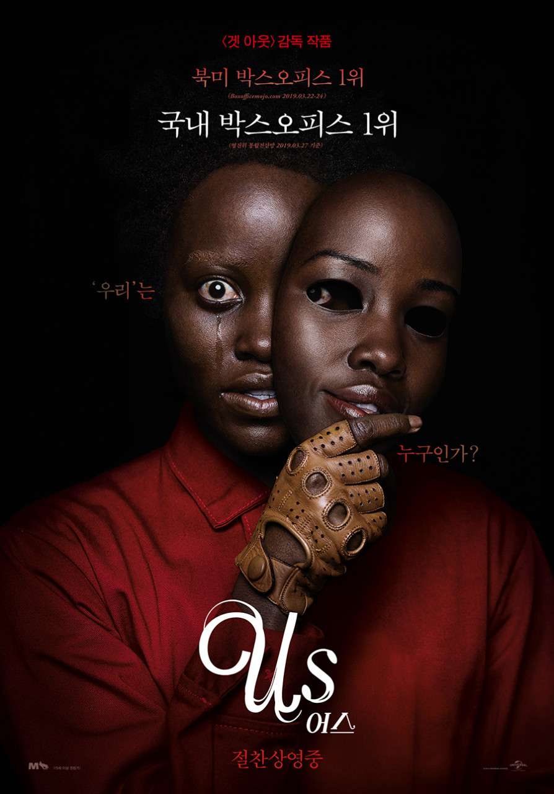

US

영화 US는 도플갱어, 복제인간을 다룬 공포 영화이다.
윌슨 가족이 산타 크루즈 해변으로 휴가를 떠나는 것으로 영화가
시작한다.
별장에 머물고 있던 어느날 의문의 가족들이 집으로 찾아
오게 되고, 몸싸움을 하다 이들이 자신과 똑같이 생겼다는 것을 알게
된다.
간신히 도망쳐 집을 빠져나와 친구 타일러에게 도움을 요청하러 간다.
하지만 이미 타일러 가족은 모두 죽어 있었다.
아들이 주인공의 복제인간에게
잡혀가 버려 아들을 찾기 위해 지하시설에 찾아가 복제인간과 싸우는 내용이다.